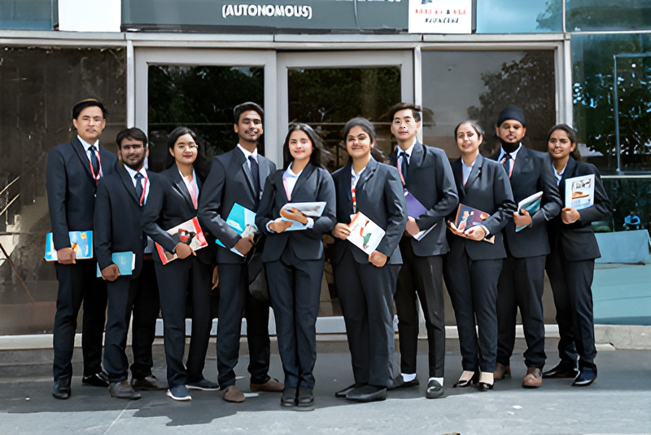

Who We Are
Guru Nanak Institutions Technical Campus (GNITC), established in 2001, is one of the top engineering colleges in India offering a blend of academic excellence and industry exposure. Located in Hyderabad, GNITC is committed to producing skilled professionals with strong ethical foundations.

Vision & Mission
Vision: To be a global educational hub known for excellence in teaching, research, and innovation.
Mission: Empower students through transformative education, cutting-edge technology, and global exposure.
Leadership
GNITC is led by Dr. S. Sreenatha Reddy, whose leadership fosters innovation, research, and international collaborations that help the institution grow in academic reputation and student success.
Accreditations
GNITC is approved by AICTE, affiliated with JNTUH, and accredited by NAAC (A+) and NBA for various departments. This ensures high standards in teaching, research, and infrastructure.